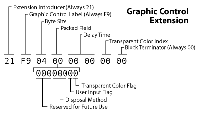

What's In A GIF |
(animation and transparency) |
In addition to being able to store simple image data, GIF files (specifically GIF89a files) allow for some special features. Tricks such as transparency and animation can be accomplished with the help of the Graphics Control Extension block. Here's a sample of what this block looks like:

I'll show you how to manipulate the bytes in this block to achieve special effects.
Cartoons are created by animators who draw a sequence of pictures, each slightly different from the one before, which, when rapidly shown one after the other, give the illusion of motion. Animation in GIF images is achieved in much the same way. Multiple images may be stored in the same file and you can tell the computer how much time to wait before showing the next image. Let's walk though the parts that make up this simple traffic light animation.

47 49 46 38 39 61 0B 00 1D 00 A2 05 00 FF 00 00 00 FF 00 FF FF 00 8E 8E 8E 00 00 00 FF FF FF 00 00 00 00 00 00 21 FF 0B 4E 45 54 53 43 41 50 45 32 2E 30 03 01 00 00 00 21 F9 04 04 64 00 00 00 2C 00 00 00 00 0B 00 1D 00 00 03 30 48 BA DC DE 23 BE 48 21 AD EB 62 A5 25 D3 93 F7 8C E4 27 9A 1B D7 A1 17 9B 1E A0 F3 96 34 13 DC CF AD 37 7A 6F F7 B8 05 30 28 F4 39 76 B5 64 02 00 21 F9 04 04 32 00 00 00 2C 02 00 0B 00 07 00 10 00 00 03 19 78 27 AC CB 0D CA 49 E1 B3 0A BB CD F7 F8 CE 27 1E 62 69 9E A3 19 82 47 02 00 21 F9 04 04 64 00 00 00 2C 02 00 02 00 07 00 10 00 00 03 19 78 07 AC CB 0D CA 49 E1 B3 0A BB CD F7 F8 CE 27 1E 62 69 9E A3 19 82 45 02 00 3B
This file is similar to the ones we've previously encountered. The bytes start out with the GIF header. Next we have a logical screen descriptor which tells us that our image is 11px by 29 px and will have a global color table with 8 colors in it (of which we only really need 5). Immediately after, follows the global color table which tells us what those colors are (0=red, 1=green, 2=yellow, 3=light grey, 4=black, 5=white, 6=black [not used], 7=black [not used] ).
Next we encounter an application extension block. This is this block that causes our animation to repeat rather than play once and stop. The first three bytes tell us we are looking at (1) an extension block (2) of type "application" which is followed by (3) 11 bytes of fixed length data. These 11 bytes contain the ASCII character codes for "NETSCAPE2.0". Then begins the actual "application data" which is contained in sub-blocks. There are two values that are stored in these sub-blocks. The first value is always the byte 01. Then we have a value in the unsigned (lo-hi byte) format that says how many times the animation should repeat. You can see that our sample image has a value of 0; this means the animation should loop forever. These three bytes are preceded by the 03 that lets the decoder know that three bytes of data follow, and they are terminated by 00, the block terminator.
This very basic animation is essentially made up of three different "scenes". The first is the one with the green light lit, the second with the yellow, and the last with the red. You should be able to see three separate chunks of image data in the bytes above.
| 1 | 2 | 3 |
|---|---|---|
The first chunk begins immediately after the application extension block. It is there we encounter our first graphic control extension. As with all extensions, it begins with 21. Next, the type specific label for the graphic control type of extension is F9. Next we see the byte size of the data in the block; this should always be 04. The first of these four data blocks is a packed field.
The packed field stores three values. The first three (highest) bits are "reserved for future use" so those have been left as zeros. The next three bits indicate the disposal method. The disposal method specifies what happens to the current image data when you move onto the next. We have three bits which means we can represent a number between 0 and 7. Our sample animated image has a value of 1 which tells the decoder to leave the image in place and draw the next image on top of it. A value of 2 would have meant that the canvas should be restored to the background color (as indicated by the logical screen descriptor). A value of 3 is defined to mean that the decoder should restore the canvas to its previous state before the current image was drawn. I don't believe that this value is widely supported but haven't had the chance to test it out. The behavior for values 4-7 are yet to be defined. If this image were not animated, these bits would have been set to 0 which indicates that do not wish to specify a disposal method. The seventh bit in they byte is the user input flag. When set to 1, that means that the decoder will wait for some sort of "input" from the person viewing the image before moving on to the next scene. I'm guessing it's highly unlikeley that you will encounter any other value that 0 for this bit. The final bit is the transparency flag. We will go into more detail about transparency in the next section. Since this image isn't using any transparency, we see this bit has been left at 0.
The next two bytes are the delay time. This value is in the same unsigned lformat as all the other integers in the file. This number represents the number of hundredths of a second to wait before moving on to the next scene. We see that our sample image has specified a value of 100 (64 00) in the first graphics control block which means we would wait 1 second before changing our green light to yellow.
Our graphics control extension block ends with the block terminator 00. You will notice this type of block appearing two more times in this image, the second instance differing only in the delay time (the yellow light only stays up for half a second).
The next chunk is an image descriptor. The block declares that it will be drawing an image starting at the top left corner and taking up the whole canvas (11px x 29px). This block is followed by the image data that contains all the codes to draw the first scene, the one with the green light on.
| Green | (Difference) | Yellow |
|---|---|---|
If we compare the first and the second scene, we see they share many of the same pixel color values. Rather than redrawing the whole canvas, we can specify just the part that changes (that is, the smallest rectangle that covers the part that changes). You'll see that the image descriptor before the second block of image data specifies that it will start at the pixel at (2, 11) and draws a box that's 7px wide by 16px tall. This is just large enough to cover the bottom two lights. The works because we chose the "do not dispose" disposal method for out graphics control extension block. In the same way, the third and final image data block only renders the top two circles to both fill in the red and cover up the yellow.
Normally, GIF images are rectangles that cover up what ever background may be beneath them. Transparency allows you to "see though" the image to whatever is below. This is a very simple trick to pull off in a GIF image. You can set up one color in your color table that is converted to "invisible ink." Then, as the image is drawn, whenever this special color is encountered, the background is allowed to show through.
There are only two pieces of data we have to set to pull this off. First we must set the Transparency Color Flag to 1. This is the lowest bit in the packed byte of the Graphic Control Extension. This will tell the decoder that we want our image to have a transparent component. Secondly we must tell the decoder which color we want to use as our invisible ink. The decoder will then all you to see thought every pixel that contains this color. Therefore make sure it's not a color that you are using else where in your image. The color you choose must be in the active color table and you specify its value in the Transparent Color Index byte by setting this value to the index of the color in the color table.
Let's demonstrate this by revisiting the sample image we used in Bits and Bytes. We will update this file to make the white center part transparent. Let's start creating the Graphic Control Extension block that will do this for us. Again we start with the 21 F9 04 punch. In the next byte, we need to flip the transparent color flag to 1 (we can leave the others at zero) so this whole byte is simply 01. The next two bytes can be left at zero.
We must now specify which color to disappear. Recall that our sample image had the following global color table:
| Index | Color |
|---|---|
| 0 | White |
| 1 | Red |
| 2 | Blue |
| 3 | Black |
We already know what we want to make all the white sections transparent. The color white has an index of 0. Therefore we will specify a value of 00 for the transparent color index block. Had we wanted to make the red transparent we would have used 01, or 02 for blue. Lastly we tack on the block terminator of 00 and we're done. We have created the following block:
21 F9 04 01 00 00 00 00
Now, all we have to do is plug this into our sample image right before the image descriptor. I've placed our original sample image on a black background as well as the one we just made so you can see the results. I've also included ones where red or blue are transparent. The last three differ by only the transparent color index byte.
| Original | Transparent White (00) |
Transparent Red (01) |
Transparent Blue (02) |
|---|---|---|---|
|
|
This concludes our description of the bits inside GIFs. If you have not already read the documentation of the GIFLIB API, you may wish to continue with that.